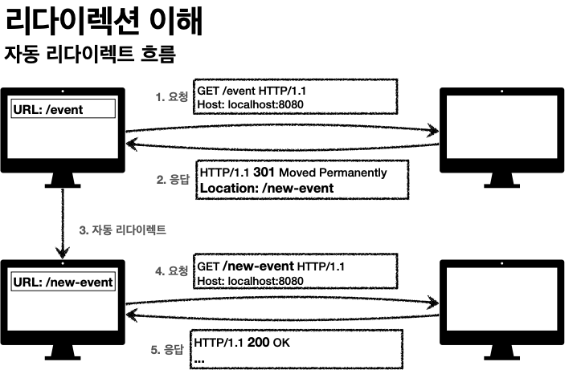
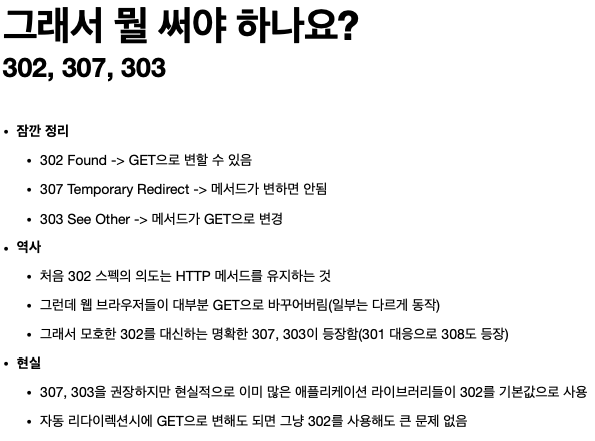

요청이 접수되었으나 처리가 완료되지 않았음
ex) 요청 접수 후 1시간 뒤에 배치 프로세스가 요청을 처리함
서버가 요청을 성공적으로 수행했지만, 응답 페이로드 본문에 보낼 데이터가 없음
ex) 웹 문서 편집기에서 save 버튼

요청이 수신되어 처리중
거의 사용 안함
클라이언트의 요청을 성공적으로 처리
요청이 접수되었으나 처리가 완료되지 않았음
ex) 요청 접수 후 1시간 뒤에 배치 프로세스가 요청을 처리함
서버가 요청을 성공적으로 수행했지만, 응답 페이로드 본문에 보낼 데이터가 없음
ex) 웹 문서 편집기에서 save 버튼
요청을 완료하기 위해 유저 에이전트의 추가 조치 필요 (301-308을 많이 쓴다고 함)
웹 프라우저는 3xx 응답의 결과에 Location 헤더가 있으면, Location위치로 자동 이동(리다이렉트)
리소스의 URI가 영구적으로 이동
실무에서는 301을 거의 대부분 사용 함
리소스의 URI가 일시적으로 변경
검색 엔진 등에서 URI을 변경하면 안됨
